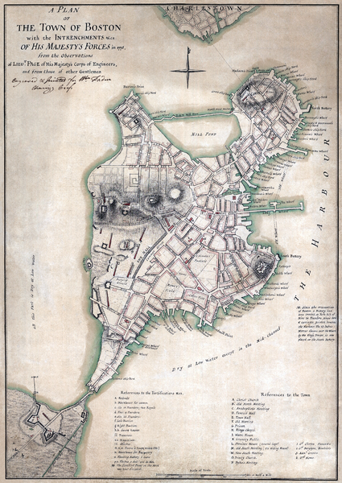
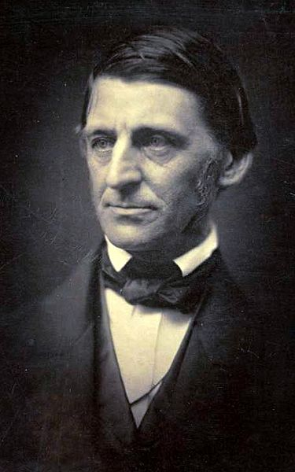
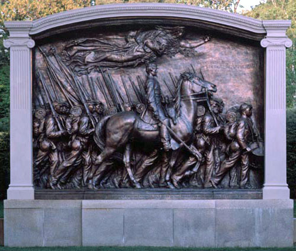

|
The capital of Massachusetts, Boston has loomed large in American history. Founded in
1630 by Puritans fleeing England due to religious persecution, Boston early established
itself at the center of American political, cultural, and economic life. Throughout the
nineteenth century and into the twentieth, it remained among America's most important
cities, a center of shipping, manufacturing, literary activity, and antislavery activism.
Or, as resident Oliver Wendell Holmes, Sr. immodestly put it, "Boston state-house is the
hub of the solar system."
Located on a peninsula jutting into an advantageously deep harbor, Boston quickly
became New England's most important seaport in the eighteenth century, importing and
exporting goods from Europe and around the world. As a consequence, the economic sanctions
levied by the British against the colonists in the 1750s and 1760s struck at Boston in
particular, so that in the 1770s Boston was at the center of events that sparked the
|

Map of Boston in 1775, on the eve of the American Revolution
|
American Revolution—the Boston Massacre, the Boston Tea Party, and Paul Revere's ride from
Boston to Lexington and Concord among them. Boston was the site of the first battle of the
Revolution—the Powder Alarm of 1774, as well as the famous Battle of Bunker Hill in 1775.
This Revolutionary heritage secured the Boston's reputation for rebellion, new ideas, and
non-conformity.
After the Revolution, Boston remained one of the most important shipping hubs in
America's new industrial economy, exporting fish, salt, tobacco, and New England-made
textiles. In the early decades of the nineteenth century, manufacturing emerged as a
significant part of the local economy, a development made possible by the numerous rivers
and waterways around Boston that powered mills and transported goods. By the time Boston
was formally chartered as a city in 1822, revenues from manufacturing outpaced those from
shipping. The development of the city's manufacturing sector drew women into the workforce
in the 1820s and 1830s, and then immigrants in the 1840s and 1850s. The large-scale
immigration of Irish Catholics, in particular, served to broaden the religious and ethnic
diversity of Boston.
At the start of the Revolution, Boston was the third largest municipality in the United
States, its 16,000 residents outnumbered only by New York's 25,000 and Philadelphia's
40,000. Between 1790 and 1860 the population of Boston increased tenfold, such that the
city had nearly 180,000 residents by the time of the Civil War. Throughout the 1800s, the
city also grew in terms of its physical size. The nation's first large-scale land
reclamation project began in the early 1800s, when the top of Beacon Hill was removed to
fill a 50-acre pond, and continued through the end of the century, by which time hundreds
of acres had been added to the city by filling in marshlands and ponds along the Charles
River waterfront.
Boston's Puritan legacy was reflected in the city's emergence as an educational and
literary hub in the nineteenth century—the "Athens of America," as it was known (though
other cities also claimed this title). The highly literate Puritans—who were committed to
the idea that each person should read the Bible for him or herself—founded America's first
public school, the Boston Latin School, in 1635 and also its first college, Harvard in
1636. By the mid-nineteenth century, Boston and neighboring Cambridge were home to a
|

Ralph Waldo Emerson, one of Boston's leading
intellectuals in the antebellum era
|
cluster of first-rate institutions of higher education, including Harvard and its
affiliated schools as well as the Massachusetts Institute of Technology, Boston College,
and Boston University. After the Revolution, Boston also became a center for literature,
publishing, and the arts. In 1807, the Boston Athenaeum—a membership-based library and
reading room—was established, and in 1852 the Boston Library was created as the largest
free public library of its time. Boston also witnessed the founding of numerous
periodicals as well, most notably the Atlantic Monthly, first published in 1857.
Thanks to the presence of Harvard College, Boston produced a group of writers,
thinkers, and speakers rivaled by no other city. Among the prominent intellectual figures
of the era that were associated with Boston were poet and literary critic James Russell
Lowell, geologist Louis Agassiz, poet and abolitionist John Greenleaf Whittier, poet Henry
Wadsworth Longfellow, historian George Bancroft, abolitionist and minister Theodore
Parker, and novelist Henry James. Ralph Waldo Emerson was also trained at Harvard, and
although Emerson, Henry David Thoreau, Louisa May Alcott, and Nathaniel Hawthorne lived in
nearby Concord for much of their careers, their Transcendentalist movement nonetheless
became associated with Boston, as the city served as a meeting place for their literary
and reform gatherings and as the publishing headquarters for many of their works. Emerson,
in particular, memorialized Boston's history in his poems "Boston Hymn" (1863) and
"Boston" (1873).
In addition to their literary contributions, antebellum Bostonians retained their
Revolutionary-era reputation for political radicalism. Boston was a center of reform, home
to many supporters of women's rights, education, and—especially—abolitionism. In 1831,
William Lloyd Garrison founded the radical abolitionist newspaper The Liberator in
Boston, criticizing the U.S. government and churches for not advocating the immediate
abolition of slavery. The passage of the Fugitive Slave Law by the U.S. Congress in 1850
outraged many Northern cities and galvanized Bostonians into action. The city was the site
of several very public cases against alleged fugitive slaves, including Shadrach Minkins
in 1851 and Anthony Burns in 1854. In the latter case, the Boston Vigilance Committee
stormed the courthouse and facilitated Burns' escape to prevent his return to the South.
In addition, Boston was an important stop on the Underground Railroad, a network of
safe houses aiding fugitive slaves in their escapes north to Canada.
During the Civil War, the city of Boston was an enormous asset to the Union cause. The
city provided enormous quantities of munitions and other manufactured goods, constructed
much of the Union Navy, and served as headquarters for several different relief
|

Augustus Saint-Gaudens's memorial to the 54th Massachusetts
Infantry Regiment, unveiled in 1897
|
organizations (most notably the United States Sanitary Commission). Boston also sent more
than 150,000 troops to the Union military (about 10 percent of the total), including some
of the most important officers and units of the war. In the former category were Joseph
Hooker, Benjamin Butler, and Nathaniel P. Banks, while the latter included the famous 54th
Massachusetts Infantry Regiment--the first African-American regiment organized under the
terms of the Emancipation Proclamation.
In the halls of Congress, Boston's delegation—led by Senators Charles Sumner and Henry
Wilson—did much to set the national agenda during and after the Civil War. As part of the
"Radical Republican" faction, these men pushed for emancipation, an end to slavery, and
full equality for African Americans. Their efforts were critical in securing passage and
adoption of the Thirteenth, Fourteenth, and Fifteenth Amendments.
Boston's population did not grow as rapidly as that of other cities—New York, for
example, had four times as many people by the time of the Civil War. However, its
influence on the United States—political, economic, and cultural—matched that of any city
in the antebellum era. The trend has continued—though only the nation's 20th largest city
in the country today, Boston still remains one of the hubs of American life.
Source: Christopher Bates for the History 139A website.
|